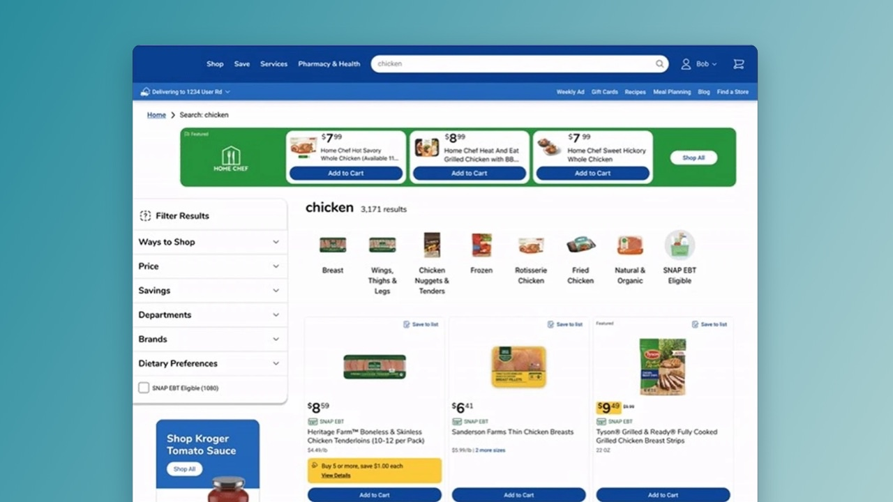
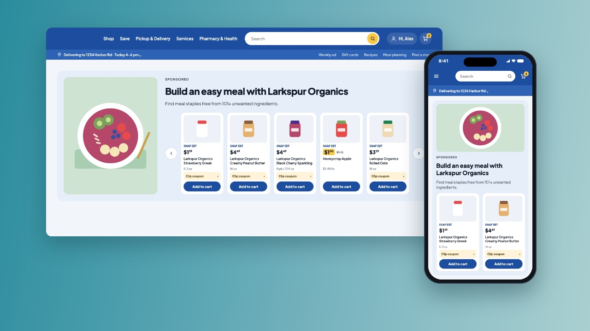
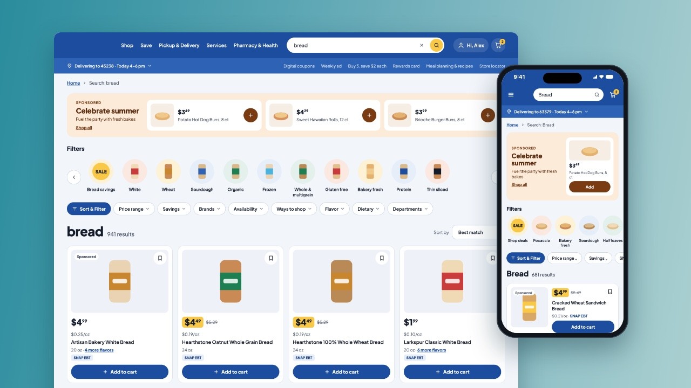

Kroger
Onsite Ad Innovation Research & User Testing
Prototyped new ad types and tested them with shoppers and brands to learn what to build next, and how and where.
100Shoppers surveyed
40Brands surveyed

Welcome! I'm Marta ✦
I am a product designer
I connect user needs with business goals
I design search and ads for tens of millions of grocery shoppers
I start with research and test with real users
I work remotely from Spain with UK, EU and US teams
Kroger
Prototyped new ad types and tested them with shoppers and brands to learn what to build next, and how and where.

Kroger
Designed sponsored carousels and a video ad format end to end, across web, iOS and Android.

Kroger
Redesigned search filters, backed by moderated and unmoderated research.

I plan and facilitate discovery sessions to frame problems and uncover opportunities.
I write research plans and run unmoderated usability tests, and support research teams with moderated ones.
I lead workshops and meetings, keeping teams and stakeholders aligned.
I plan design roadmaps, size the work for each quarter and break it into sprints.
From quick wireframes to high-fidelity prototypes, covering every flow and edge case.
I integrate AI as a tool across the design process, from research to ideation and design, to work more effectively. Certified in AI for UX Design.